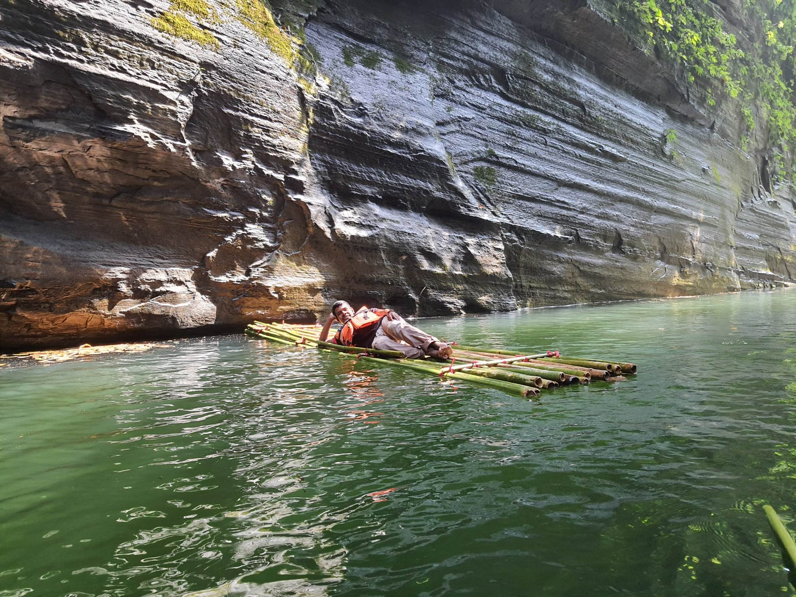

SundarBon
Jun 6 , 2023 Posted by : Naeem

Details..
সুন্দরবনে সাধারনত তিনি ধরনের টুর হয়:
#শর্ট টুর: করমজল
এটা সুন্দরবনের প্রথম স্পট। মংলা থেকে চার ঘন্টায় ঘুরে আসা যায় অনায়াসেই, কোন পারমিসনের প্রয়োজন হয়না,
২৩ টাকার প্রবেশ টিকিট সংগ্রহ করলেই যথেস্ট। এখানে রয়েছে বনে হাটার জন্য একটি ট্রেইল ও ওয়াচ টাওয়ার,
সুন্দরবনের অন্য স্পটগুলোতে হরিণ কুমির বা বানর দেখতে পান বা না পান করমজলে দেখতে পাবেন শিওর। কারন
তাদেরকে বেধে রাখা হয়েছে। এ দৃশ্য অবশ্য যে কোন চিড়িয়াখানাতেও দেখা যায়।
#মাঝারি টুর: হারবাড়িয়া
আমার দেখা সু্ন্দরবনের সবচেয়ে গোছানো ও সুন্দর স্পট এই হারবাড়িয়া। চিড়িয়াখানা ছাড়া করমজলের সব গুনই আছে
হারবাড়িয়ায়। এখানে পাবেন আরেকটু গহীন বনের অনুভুতি। এই স্পটটি সুন্দরবনের আরেকটু ভেতরে হওয়ায় ঘুরে আসতে
একদিন পুরো লেগে যায়, অনেকে নৌকাতে রাতেও থাকে। বন বিভাগের পারমিশন ছাড়া ট্রেইলে হাটা যাবেনা। পাশ
পারমিশন হয়ে গেলে আপনার সাথে দেয়া হবে একজন গান ম্যান। যেহেতু গান ম্যান সাথে যায়, তাই বুঝতেই পারছেন
এটা কোন খেলনা বন নয়, হালুমের মোটামুটি কাছাকাছিই আছেন আপনি। এই স্পটে প্রায়ই দেখা মেলে বাঘের কাঁচা
পায়ের ছাপ। তাই চোখ কান খোলা রাখুন!
নাব্বতা সংকটের কারনে মোংলা পোর্টে এখন আর বড় জাহাজ খুব একটা আসেনা। সব আনলোড হয় এই হারবারিয়ার মাঝ
নদীতেই। তাই সেখানে গেলে আপনার দেখা মিলবে বিশাল দেহি সামুদ্রিক জাহাজ, যা আমাদের দেশী সাধারণ
কার্গোগুলোর ২০-৫০ টার সমানও হয়)
#লং টুর: কটকা- কচিখালী-হারবাড়িয়া-করমজল
সুন্দরবনের পরিপুর্ন স্বাধ যদি কেউ পেতে চায় তাহলে তাকে এই টুরে যেতেই হবে। আগের স্পটগুলোও কভার করা হয়
এই টুরে, সাথে যোগ হয় গহীন বনে প্রবেশ ও বাঘের রাস্তা ধরে হাটার সুযোগ।এই টুরে পুরো তিন দিন লেগে যায়।
লঞ্চ নিয়ে চলে যাওয়া হয় সুন্দরবনের একেবারে শেষ মাথায়। গহীন বনের যেখানে শেষ, সেখান থেকেই শুরু হয়েছে
বঙ্গপসাগর, সে দৃশ্য চোখে না দেথলে বলে বোঝানো যাবে না। সাধারণত বাঘ দেথা না গেলেও খোলা মাঠে হরিন দেখতে
কটকায় খুব একটা ভাগ্য লাগেলা।এর পাশেই কচিখালী স্পট, সেখানেই অবস্থান কচিখালী বিচের। এই টুরে নৌকায় করে
ঘুরা হয় ছোট খালে। বড়শি দিয়ে ধরা যায় মাছ। অনেক ক্ষেত্রে দেখা যায় বাঘের পায়ের ছাপ। তিন দিন খাওয়া দাওয়া
সহ সব কর্মকান্ডই হয় লঞ্চে।
নীলগিরি
Jun 6 , 2023 Posted by : Naeem
Details
নীলগিরি (Nilgiri) কে বলা হয় বাংলার দার্জিলিং। দীগন্ত জুড়ে সবুজ পাহাড় আর মেঘের লুকোচুরি যে কাউকে এর রূপ দিয়ে বিমোহিত করে রাখবে। যদি সমুদ্র পৃষ্ট থেকে ২২০০ ফুট উচ্চতায় মেঘ ছোঁয়ার ইচ্ছে থাকে তাহলে নীলগিরি আপনার সেই ইচ্ছে পূরণ করবে। নীলগিরি পাহাড় চূড়াতেই রয়েছে সেনাবাহিনী পরিচালিত বাংলাদেশের সবচেয়ে সুন্দর পর্যটক কেন্দ্র গুলোর একটি নীলগিরি পর্যটক কেন্দ্র। বান্দরবান জেলা সদর থেকে প্রায় ৫০ কিলোমিটার দূরে ২২০০ ফুট উঁচু পাহাড়ের নাম নীলগিরি।
মারায়ন তং
Jun 6 , 2023 Posted by : Naeem
Details
বান্দরবান জেলার আলীকদম থানার মিরিঞ্জা রেঞ্জে অবস্থিত একটি পাহাড়ের নাম মারায়ন তং (Marayan Dong)। এই পাহাড় আরও কয়েকটি নামে পরিচিত যেমন; মারায়ান তং, মারায়ং তং, মেরাই থং জাদি, মারাইং ডং ইত্যাদি। প্রায় ১৬৪০ ফুট উচ্চতার এই পাহাড়ের চূড়ায় আছে একটি বৌদ্ধ উপাসনালয়। খোলা প্রকৃতির মাঝে বৌদ্ধের বিশাল মূর্তি এই জায়গাটিকে আরও গাম্ভির্যময় করে তোলেছে। দিগন্তজোড়া পাহাড় আর নিচে সাপের মতো বয়ে চলা মাতামুহুরী নদী, ফসলের ক্ষেত সবকিছু মিলিয়ে এ যেন এক কল্পনার রাজ্য। ত্রিপুরা, মারমা, মুরং সহ বেশিকিছু আদিবাসীর বসবাস এই মারায়ন তং পাহাড়ে। পাহাড়ের ভাঁজে ভাঁজে থাকা আদিবাসী পাড়াগুলো বিশেষ বৈচিত্রতা যুক্ত করেছে আলীকদমের এই পাহাড়ি সৌন্দর্যে। পাহাড়ের ওপর নির্ভরশীল মানুষের জীবনযাত্রা এবং নিখাদ প্রকৃতি দুচোখ ভরিয়ে দেয় এখানে আগত পর্যটকদের।
নীলগিরি
Jun 6 , 2023 Posted by : Naeem
Details
নীলগিরি (Nilgiri) কে বলা হয় বাংলার দার্জিলিং। দীগন্ত জুড়ে সবুজ পাহাড় আর মেঘের লুকোচুরি যে কাউকে এর রূপ দিয়ে বিমোহিত করে রাখবে। যদি সমুদ্র পৃষ্ট থেকে ২২০০ ফুট উচ্চতায় মেঘ ছোঁয়ার ইচ্ছে থাকে তাহলে নীলগিরি আপনার সেই ইচ্ছে পূরণ করবে। নীলগিরি পাহাড় চূড়াতেই রয়েছে সেনাবাহিনী পরিচালিত বাংলাদেশের সবচেয়ে সুন্দর পর্যটক কেন্দ্র গুলোর একটি নীলগিরি পর্যটক কেন্দ্র। বান্দরবান জেলা সদর থেকে প্রায় ৫০ কিলোমিটার দূরে ২২০০ ফুট উঁচু পাহাড়ের নাম নীলগিরি।
Popular Post
Image
Image
Image
About Me
Follow Me
Facebook:
Youtube :